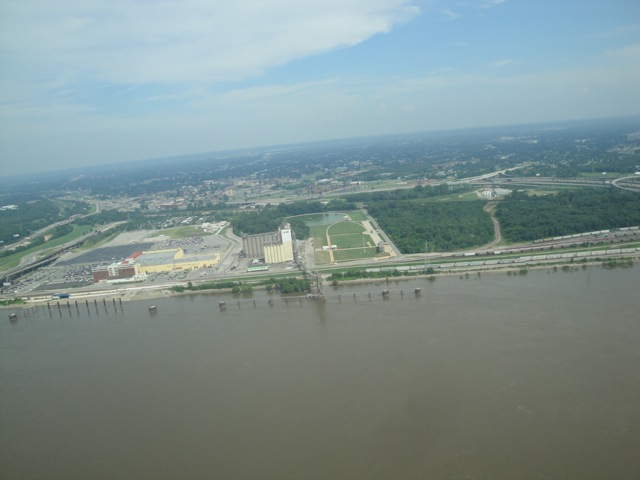
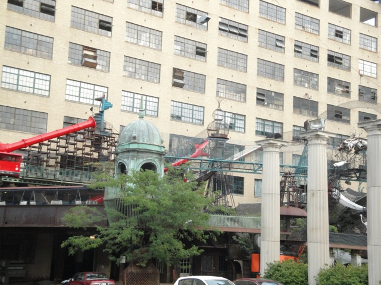
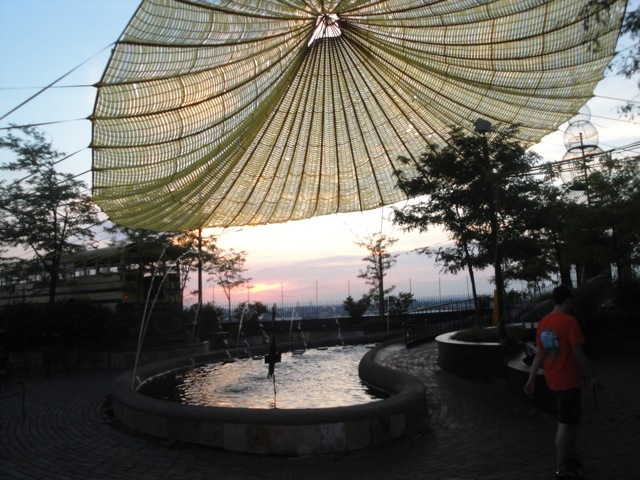

TPR's Middle America Tour
Nickelodeon Universe
Adventureland
Worlds of Fun
Silver Dollar City
City Museum
Six Flags St. Louis Holiday World Indiana Beach Six Flags Great America Mt. Olympus Timber Falls Valleyfair
Ok. So today is our official No park day of the tour. Ahh man. What the hell could we possibly do without parks?
 Well, for our first stop of the day, our bus driver had to drive our bus through that. Way to go Bryan. You kicked ass as a bus driver. And your true stories were hilarious.
Well, for our first stop of the day, our bus driver had to drive our bus through that. Way to go Bryan. You kicked ass as a bus driver. And your true stories were hilarious.
First stop of the day, Pizza Hut Takeover!! =)
This little pizza hut in the middle of nowhere Missouri has offically been scared for life.
Up next, we're off to the St. Louis Gateway Arch.
"WHAT!!!? INCREDIBLECOASTERS EXPLORING CULTURE!!!!? RUN!!! IT'S A SIGN OF THE APOCOLYPSE!!!!"
Anyone else think they should just convert the Gateway Arch into a bigass Skycoaster?
Gateway Arch Crotch Shot.
All right. Let's head up to the top of this thing.
Just incase you thought we took the North Tram up to the top.
"F*ck Culture! If they don't have any rides for Kidtums here, I'll make one myself!"
We at Incrediblecoasters do not recommend the Gateway Arch for anyone who's claustrophobic.
The top of the arch isn't that much better than the pods you take to get up to the top.

From the Gateway Arch, you can get such lovely views such as the Missisippi River...
The rest of St. Louis...
And even the bottom of the Gateway Arch itself.
Shadow Shot of the Gateway Arch.
Ooh!! Artsy Shot of the Gateway Arch.
Notice how the culture dominates above Incrediblecoasters?
The Gateway Arch through some unimportant random St. Louis building.

Ahh. That's enough culture for now. Let's do something fun. Like hang out in this f*cked up contraption.
In case you don't know, that f*cked up contraption is the St. Louis City Museum. And it is amazing.
For those who don't know, at the City Museum, you basically just get to go through all sorts of crazy insane contraptions.
Ok. So what exactly is the Cave Slide you may ask?
Basically you climb up a huge flight of stairs...
And then you slide down a 10 story slide.
"Are we there yet?"
 Well, here goes nothing.
Well, here goes nothing.
Unfortunetly, the Cave Slide was actually quite slow due to the heavy friction the slide creates. But still!! It's a 10 story slide. Therefor, it is still amazing.
Hello. My name is Mr. Fish. At many places, I'm the star of the show such as at the aquarium or in the ocean. But I'm the most boring thing here.
Where the hell am I? I seriously don't know where I took this picture.
Another look at the 10 story Cave Slides.
Time to get crawling through the coils.
This is a very bizarre place.
Hooray!! Another bigass slide.
This one had a little bit of speed as long as you went down on your stomach.
Time to go out into the outdoor part of the museum.
This may be hurting my legs, but I love it.
"I may be out of shape, but dammit!! I KNOW I can make it through these coils!!!!"
"A little help here?"
Please ignore my big ass and keep moving.
All right!! I made it to the plane!!
Meh. Who needs flying lessons. I'm flying this plane just fine.
See. We haven't crashed yet. And I see no sign of flying into the ground or any buildings.
"Hey. I don't remember parking my plane here. How did that happen?"
We have encountered another giant slide.
It too, suffers from Too much Friction Syndrome and is not nearly as fast as you would think.
Vertical Slide Goodness.
FIGHT!!!! FIGHT!!!! FIGHT!!!!!
"Wait? Why are we fighting each other? The real enemy is right over there."
"DIRECT HIT!!!!!"
This is not going to end well.
"My mommy says I'm not allowed in the Ball Pit. So I'm stuck here in the Sponge Room."
All right!! I see a beehive! Now where's that bastard who stung me on Wildfire!!!?
 There you are. Well Mr. Bee, what do you have to say for yourself. Do you think it's fun to sting people on B&Ms? How would you like it if I stung you while pollenating those flowers?
There you are. Well Mr. Bee, what do you have to say for yourself. Do you think it's fun to sting people on B&Ms? How would you like it if I stung you while pollenating those flowers?
Hmm. I never once thought it was Illegal.
Anyone up for Bob's Big Boy?
Anyone up to try out that Vertical Slide.
"Hey! There's no slide too dangerous for me!!"
Hey, why wasn't Incrediblecoasters invited to this slide meeting?
Yeah. That's the expression most people have while sliding down the slides here.
Oh boy!! I can't wait to see what sort of crazy stuff they have on the roof!!

Hey, this actually looks pretty peaceful. (For the City Museum.)
They have their very own ferris wheel on the roof.
Yeah. This place is amazing.
HOLY CRAP!!! THE CITY MUSEUM IS BEING ATTACKED BY GIANT MUTATED GRASSHOPPERS!!!!
St. Louis at sunset.
More crazy climbing contraptions are needed to get to this slide.
Dude!! This slide is actually really freaking fast!!! =)
And now, to finish off this night, White Castle!!!
It's been a long journey, but we finally made it to White Castle.
Unfortunetly, White Castle isn't that good. "DAMN YOU HAROLD AND KUMAR!!!! YOU LIED TO ME!!!!!!"
Screw the Gateway Arch. We now have the White Castle Arch. This one's better because we added a drop tower/lightning rod at the top.
Six Flags St. Louis
Home